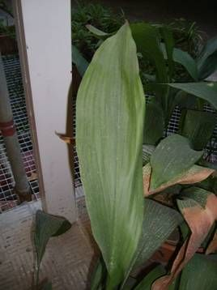
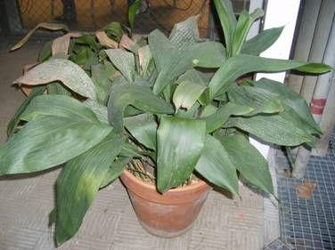

Flora
ornamental del
Campus de Reina Mercedes - Universidad de Sevilla - Ficha nº
86 -
Versión 1
|
Aspidistra elatior Blume in Hoev.
& De Vriese, Tijdschr.
1 (1834) |
|
|
Aspidistra, pilistra, hojas de salón, hojas de lata, hojalata |
Hierba perenne |
|
Planta
herbácea perenne, de
|
 |
|
 |
Observaciones: Su
nombre deriva del
griego aspis (escudo). Se ha extendido su
cultivo por Europa
debido a su resistencia y su capacidad de crecer en
sitios
umbríos. Muy usada para adornar lugares poco
iluminados. Existe una variedad variegada, con franjas longitudinales de tonos blanquecinos. |
|
Área de origen.- Centro y Este de Asia. Fue introducida en Europa a principios del S. XIX, llegando a ser muy popular en los hogares españoles. |
|
|
Uso en el campus: 9 rodales dentro del Campus. Se usa como planta de sombra, en macetas principalmente. |
Localización: Zona central del Campus: Patio Este del
Edificio Verde |
| Elena Benal Palomeque
& Carlos Romero
Zarco, 2008 |
|